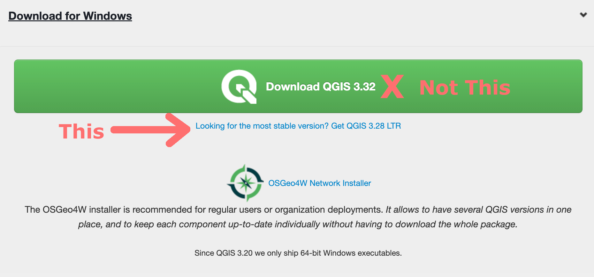
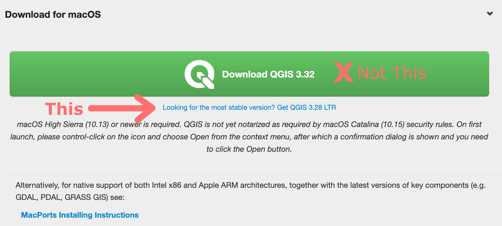

Chapman University. Earth from Above: Env 329 - Fall 2023
QGIS is an application that supports viewing, editing, printing, and analysis of geospatial data. Geospatial data is information connected to locations on the Earth’s surface. You can map objects, events, and other real-world phenomena to a specific geographical area identified by latitude and longitude coordinates. We use data like this everyday when we navigate to museums, restaurants, or a friend’s house using Google or Apple maps. In this course, we are going to analyze geospatial data from NASA satellites and create maps visualizing the impact of climate change and natural disasters.
If you have ever worked with geographic information system (GIS) software before, you might have used ArcGIS, which is a popular but paid program. QGIS is a free and open source alternative to ArcGIS, that is widely used in industry, research, and by departments of government, including the National Security Agency (NSA).
Each week you will use QGIS to complete a new tutorial and submit “Map-of-the-Week” assignments that will add tools to your skill set, culminating in an in-depth final project exploring an environmental event using ECOSTRESS and other data sources.
Head over to https://qgis.org/en/site/forusers/download.html and download the stable version for your operating system.
NOTE: QGIS offers a latest release which is cutting edge and unstable. I suggest downloading the Long Term Release (LTR), which is stable and easier to use. See images below for each operating system:

Check for the QGIS executable file (.msi) in whichever folder you downloaded it to and open it. Follow the prompts to install the software.
Open QGIS Desktop from the start menu or desktop icon.

Check for the QGIS executable file (.dmg) in whichever folder you downloaded it to and open it. Follow the prompts to accept the terms and conditions. To install the software, hold and drag the file into your Applications.
Open QGIS by selecting it in Launchpad or use Go → Applications and double click on QGIS.
Use your package manager to install the stable version from your distribution’s repository or follow these instructions to install a more up to date version : https://www.qgis.org/en/site/forusers/alldownloads.html#linux.
Congratulations! You have now successfully installed QGIS. In our next class we will get you up and running to make your first map.
Citation: Forsythe, Goldsmith, Fisher 2023.